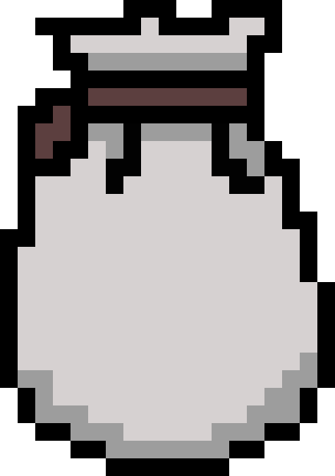
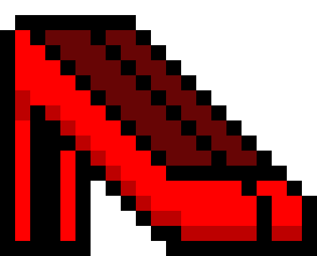

Colo
Mitolo
Gital

Read the Story
Chapter One
El Dedo En El Baño
Description
For generations, there was a cloth bag in my great grandmother’s bathroom said to contain the finger bone of my great-great grandmother who had passed away. When visiting her grave became impossible after my family was dislocated by the civil war, the bone was taken to maintain a spiritual link. What memories could this this bone hold?
Story passed down by my abuela, Nidia Rincon
Content Warning
Suggestions of state endorsed violence.
Read the Story

Read the Story
Chapter Two
La Señora Con Tacones
Description
A well-liked woman on my father’s street mysteriously went missing after a night out. She was never found, but the sound of her heels clacking could still be heard. What could be the reason for her not returning?
Reasons relayed by my mom, grandmother and other family & friends.
Content Warning
Some suggestions of mysogyny.
Read the Story